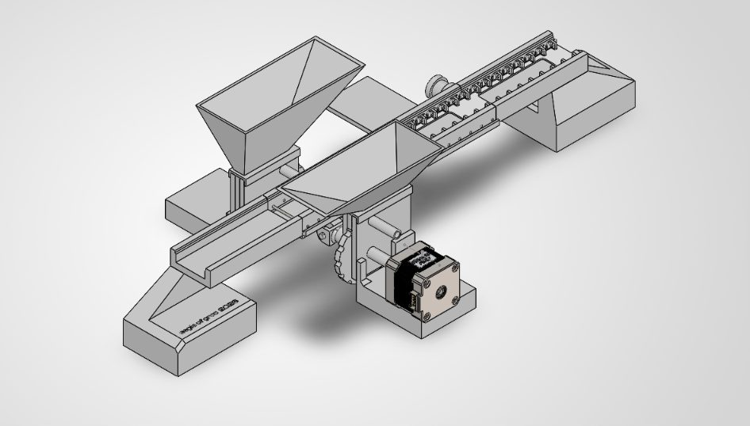

Product design · AEGIS · Oct 2026 to present
Drawer Slide Ball Retainer & Loader
A problem I saw at Knape & Vogt: loading ball bearings into drawer slide retainers by hand. I reverse-engineered the retainer (AEGIS-001) and am leading a club team designing a loader for it.
- Retainer
- Measured the original with calipers, modeled it in SolidWorks, and released a dimensioned drawing to ASME Y14.5 for a 3D-printed ABS version holding 36 Ø4.5 mm chrome steel balls.
- Rev B
- Added retention hooks and increased wall thickness after the first release.
- Loader
- Hopper-fed, stepper-driven concept that indexes balls into the retainer. Demo planned for December 2026.
SolidWorksASME Y14.5Reverse engineering3D printingMechanism design